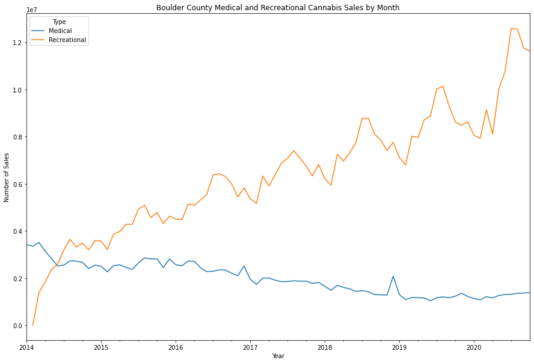
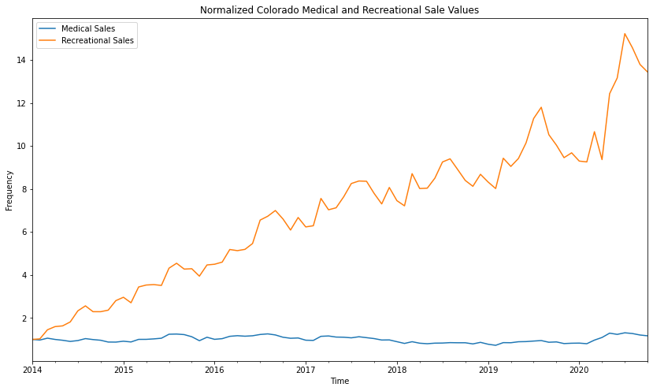
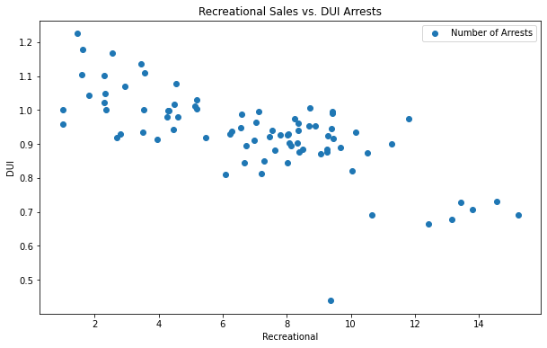
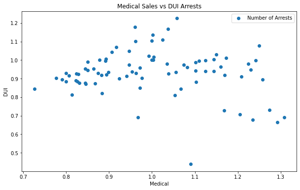
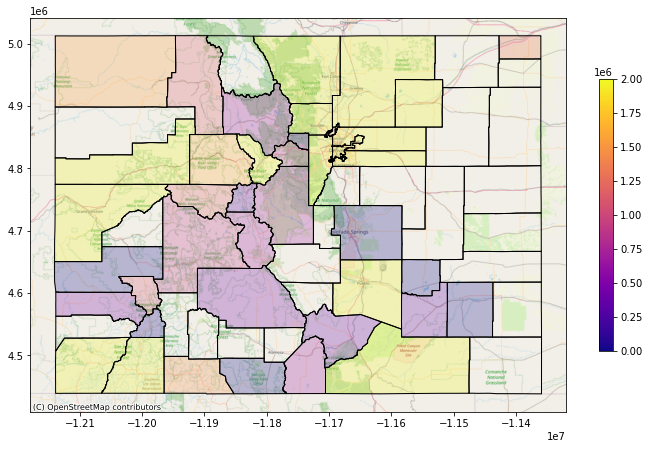
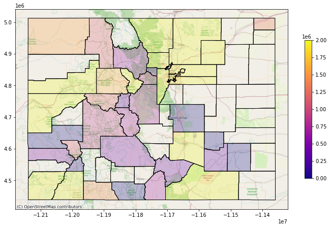
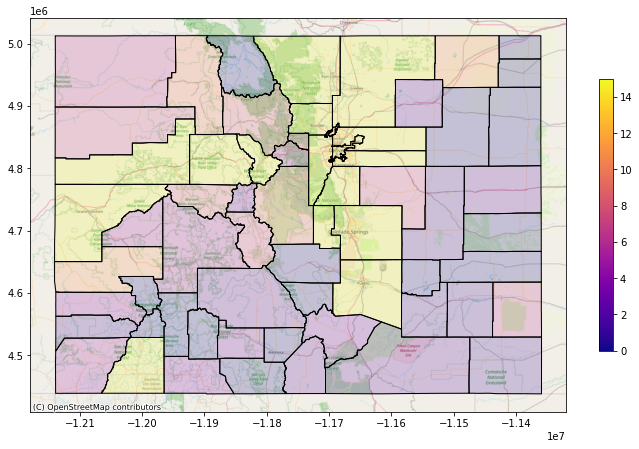
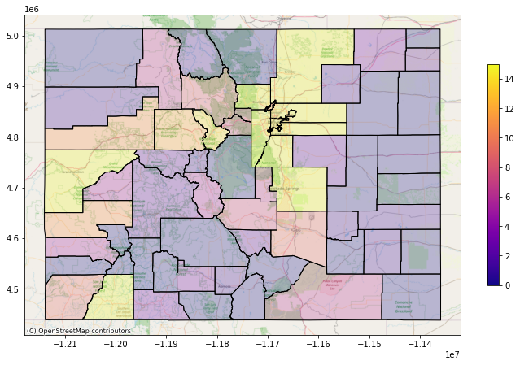

The Legalization of Marijuana and the Effect on DUI Arrest Rates
Abstract
In recent years the legalization of marijuana in the United States has become increasingly common as more states take the steps to legalize recreational marijuana use. Colorado is known for being one of the first states to legalize recreational marijuana use so we decided to look into how the recreational use of marijuana has affected DUI rates in the state. To answer this question we used datasets containing information on the number of DUI arrests in Colorado, the number of marijuana sales, and if the marijuana sale was recreational or medical. This data is also broken down by county. We found that recreational sales in both Colorado and Boulder County have greatly increased since 2014 while medical marijuana sales have stayed consistent. Since then, DUI’s have also decreased significantly when compared to the number of recreational marijuana sales, but have only slightly decreased when compared to the number of medical marijuana sales.
Introduction to Problem
In 2012 Colorado and Washington state approved the ballot initiatives that would fully legalize the recreational use of marijuana. In recent years, more and more states have begun to follow Colorado and Washington's footsteps by passing legislation to approve the use of recreational marijuana. Today in total, 13 other states have approved state ballots that pushed for the legalization of marijuana [3]. As the movement towards legalization would legalize marijuana on the federal level, many different stances on the possible benefits and drawbacks of these ballots have been discussed at length. The benefits that have been cited are the reduction of crimes, more tax revenue, and improvements in public health. Simultaneously, the drawbacks of diminishing traffic safety and lower teen educational achievement have also been argued [3].For our project, we aim to look into the validity of these arguments. To do this, we are looking into datasets containing information on the number of arrests, the number of marijuana sales, and if the marijuana sale was recreational or medical. Additionally, we are going to see the effects of this in Boulder County. From the information, we can begin to create visualizations that help us see the relationships between DUIS and the legalization of marijuana.
Background of Data
In order to answer our research question we used existing data from The Colorado Department of Revenue for marijuana sales reports and public data from Colorado Crime States for DUI arrest data. The marijuana sales reports are stored as Excel files on Google Drive, so we downloaded the Excel files that started in January 2014 and ended in October 2020. These files contained data such as the month of the sale, the county of the sale, the number of sales per month per county, and the type of sale (recreational or medical). We ran these files through a function that combined these Excel files into one table, which was created using the pandas library. The public crime data we used starts in January 2014 and ends in February 2021. The dataset included data such as the county of the arrest, the number of arrests per county per month, the month of the arrest, and the type of arrest. In this case we only looked at arrests dealing with DUIs. Lastly we read in a Colorado county shapefile that included geographical information on each county in Colorado such as population data and geographical coordinates. This was used to create the Colorado spatial visualizations.
Design Description
For the deliverable for this assignment, we created a basic website to display the entirety of our project; in an accessible format. To begin we all met to discuss what we were interested in, and how best to fulfill the tasks and deliverables assigned to us. The first thing we did was find a reliable and usable data source. From a previous Information Science class, the team used a dataset and analyzed that data through a Python Jupyter Notebook. The data was also visualized with this program using pandas and matplotlib. To further push our project to the public space, a website was created to explain the project thoroughly. The design choices here were to create a single, professional-looking page with graphics and explanations. The page has light blue/purple tones, with notches leading into each next section. Visualizations are available in each appropriate section as well as the analysis. Our group created this to establish an accessible project.
Sales Visualizations

Figure 1: Colorado Medical and Recreational Cannabis Sales by Month
In this visual we are comparing medical and recreational sales of marijuana in the state of Colorado from January 2014 to October 2020. The reason this plot stops in October 2020 is because we could only get sales data up to October 2020. At first glance it is clear that recreational sales have greatly increased over the years while medical sales have stayed somewhat constant with some slight fluctuation each month. If we were to make a prediction about future recreational marijuana sales based off of this plot, it is clear that recreational sales will continue to increase
Figure 2: Boulder County Medical and Recreational Cannabis Sales by Month
In this visual we are comparing medical and recreational sales of marijuana in Boulder County, Colorado from January 2014 to October 2020. The reason this plot stops in October 2020 is because we could only get sales data up to October 2020. Here we see that medical marijuana sales have actually decreased over time while recreational sales have increased. It seems that medical sales are starting to become more consistent starting in early 2019. This could be because people who bought marijuana for medical reasons could now be buying it recreationally instead.
Figure 3: Normalized Colorado Medical and Recreational Sale Value
Here we can see that DUI arrests have stayed fairly constant since 2014 (when the data begins) even though recreational sales of marijuana have greatly increased. Since the legalization of marijuana in 2012, recreational sales have increased, however, medical marijuana sales have stayed the same since then. Because both values have been normalized to start at 1, this allows us to see how medical marijuana sales and recreational marijuana sales have changed rather than if they had started at their original values. By starting at 1, we can see a better visualization of their changes over time by being able to compare them right next to one another
Crime Visualizations
Figure 4: Recreational Sales vs. DUI Arrests
The plot shows an overall negative relationship between recreational marijuana sales and the number of DUI arrests. As recreational sales increase, the number of DUI arrests decreases.
Figure 5: Medical Sales vs. DUI Arrests
The plot shows an overall slightly negative relationship between medical marijuana sales and the number of DUI arrests. As medical sales increase, the number of DUI arrests decreases as well.
Comparison Visualizations
 

Figure 6: Recreational Sales -- Oct. 2014 vs. Oct. 2020
In this visual we are comparing medical and recreational sales of marijuana in the state of Colorado from January 2014 to October 2020. The reason this plot stops in October 2020 is because we could only get sales data up to October 2020. At first glance it is clear that recreational sales have greatly increased over the years while medical sales have stayed somewhat constant with some slight fluctuation each month. If we were to make a prediction about future recreational marijuana sales based off of this plot, it is clear that recreational sales will continue to increase
 Figure 7: DUI Arrests -- Feb. 2014 vs. Feb. 2021
In this visual we are comparing medical and recreational sales of marijuana in Boulder County, Colorado from January 2014 to October 2020. The reason this plot stops in October 2020 is because we could only get sales data up to October 2020. Here we see that medical marijuana sales have actually decreased over time while recreational sales have increased. It seems that medical sales are starting to become more consistent starting in early 2019. This could be because people who bought marijuana for medical reasons could now be buying it recreationally instead.
Discussion and Conclusion
After discussion of the findings from our data analysis we noticed significant themes that were consistent throughout the visuals. The first theme that we noticed was that since 2014, recreational sales of marijuana have been increasing every year. This along with medical marijuana sales remaining constant, and even seeing a slight decline, leads us to believe that marijuana consumption is increasing every year as well. Consumption of marijuana medically has now become almost obsolete as it is now legal to buy marijuana regardless of a medical card or not.
The second theme that we noticed was that marijuana sales and consumption is not only limited to urban areas, it has increased significantly across the state of Colorado since 2014. There are many possibilities to why this would occur. One of them being that there is a possible increase in population consumption of marijuana products. There could also be an increase in marijuana consumers moving into those areas from out of state, this could be further explored by looking at new Colorado residents since 2014. Lastly, we saw through our analysis that DUI arrests and the increase in marijuana sales has very little to no correlation. Suggesting that with the increase in sales of marijuana across the state, people driving under the influence of marijuana has not increased and has in fact declined a little as well.
References
- Caulkins, Jonathan P., Beau Kilmer, and Mark Kleiman. Marijuana Legalization: What Everyone Needs to Know. Oxford University Press, New York, NY, 2016.
- Ghosh, Tista, et al. “The American Journal of Public Health (AJPH) from the American Public Health Association (APHA) Publications.” American Public Health Association (APHA) Publications, 2015, ajph.aphapublications.org/doi/full/10.2105/AJPH.2015.302875.
- Dills, Angela, et al. “The Effect of State Marijuana Legalizations: 2021 Update.” Cato Institute, 2 Feb. 2021
- “Delays in DUI Blood Testing: Impact on Cannabis DUI Assessments.” Taylor & Francis, www.tandfonline.com/doi/abs/10.1080/15389588.2015.1052421.
- Ghosh, Tista S., et al. “Lessons Learned after Three Years of Legalized, Recreational Marijuana: The Colorado Experience.” Preventive Medicine, Academic Press, 21 Feb. 2017, www.sciencedirect.com/science/article/abs/pii/S0091743517300762.
- T., Jordan. “DUI of Marijuana - Colorado Law (Explained By Defense Lawyers).” Shouse Law Group, 18 Feb. 2021, :-/
- Bichell, Rae Ellen. “Scientists Still Seek A Reliable DUI Test For Marijuana.” NPR, NPR, 30 July 2017, www.npr.org/sections/health-shots/2017/07/30/523004450/scientists-still-seek-a-reliable-dui-test-for-marijuana.
- Choi, Namkee G., Diana M. DiNitto, and C. N. Marti. "Older Adults Driving Under the Influence: Associations with Marijuana use, Marijuana use Disorder, and Risk Perceptions." Journal of Applied Gerontology, vol. 38, no. 12, 2019, pp. 1687-1707. ProQuest, https://colorado.idm.oclc.org/login?url=https://www-proquest-com.colorado.idm.oclc.org/scholarly-journals/older-adults-driving-under-influence-associations/docview/2488236899/se-2?accountid=14503, doi:http://dx.doi.org.colorado.idm.oclc.org/10.1177/0733464817745379.